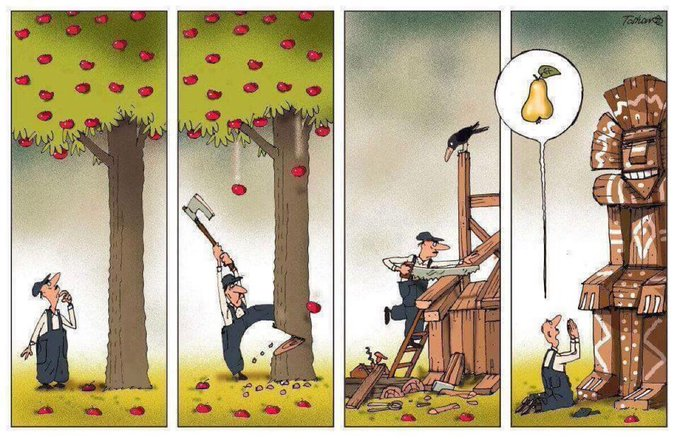

"El hombre es la especie más insensata: venera a un Dios invisible y masacra una naturaleza visible, sin saber que esta naturaleza que él masacra es ese Dios invisible que él venera." - Hubert Reeves
